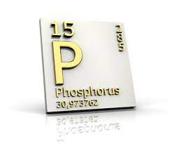

PHOSPHORUS

PROPERTIES
1)It is a non metal .
2)It is a colourless .
3)It is a semitransparent.
4)It is a soft ,waxy solid that glows in the dark .
5)There are several forms of phosphorous, called white, red and black phosphorous .
6)White phosphorous is the one manufactured industrial; it glows in the dark, is spontaneously flammable when exposed to air and is deadly poison.
7) Red phosphorous can vary in colour from orange to purple, due to slight variations in its chemical structure .
8) Black phosphorous, is made under high pressure, looks like graphite and, like graphite, has the ability to conduct electricity.
9)phosphorous is never encountered in its pure form.
10)In the oceans, the concentration of phosphates is very low .
11)Phosphorus can be found in the environment most commonly as phosphates.
12)Phosphorus in its pure form has a white colour.
13) White phosphorus is the most dangerous form of phosphorus that is known to us.
14)When white phosphorus occurs in nature this can be a serious danger to our health.
15)White phosphorus is extremely poisonous and in many cases exposure to it will be fatal.
16)White phosphorus can cause skin burns. While burning, white phosphorus may cause damage to the liver, the heart or the kidneys.
17)White phosphorus enters the environment when industries use it to make other chemicals and when the army uses it as ammunition.
18)White phosphorus is not likely to spread , because it reacts with oxygen fairly quickly.
19)When phosphorus ends up in air through exhausts it will usually react with oxygen right away to be converted into less harmful particles.
However, when phosphorus particles are in air they may have a protective coating that prevents chemical reactions.
Reaction of PHOSPHORUS
White phosphorus glows in the dark when exposed to damp air in a process known as chemiluminescence. White phosphorus must be handled with great care. It spontanteously ignites in air at about room temperature to form "phosphorus pentoxide" - actually tetraphosphorus decaoxide, P4O10.
P4(s) + 5O2(g) ? P4O10(s)
Under careful control (75% O2, 25% N2, 50°C, 90 mm Hg), a mixture is formed, one of the products within which is "phosphorus trioxide" - actually tetraphosphorus hexaoxide, P4O6.
P4(s) + 3O2(g) ? P4O6(s)
White phosphorus, P4, reacts vigorously with all the halogens at room temeperature to form phosphorus trihalides. So, it reacts with fluorine, F2, chlorine, Cl2, bromine, Br2, and iodine, I2, to form respectively phosphorus(III) fluoride, PF3, phosphorus(III) chloride, PCl3, phosphorus(III) bromide, PBr3, and phosphorus(III) iodide, PI3.
P4(s) + 6F2(g) ?4PF3(g)
P4(s) + 6Cl2(g) ? 4PCl3(l)
P4(s) + 6Br2(g) ?4PBr3(l)
P4(s) + 6I2(g) ? 4PI3(g)
White phosphorus, P4, reacts with iodine, I2, in carbon disulphide (CS2) to form phosphorus(II) iodide, P2I4. The same compound is formed in the reaction between red phosphorus and iodine, I2, at 180°C.
P4(s) + 4I2(g) ?2P2I4(g)